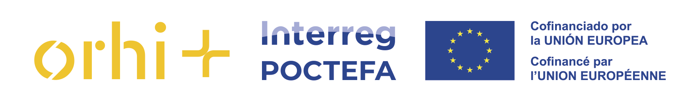
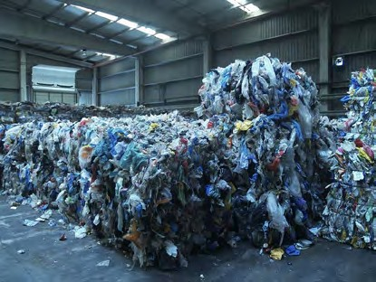
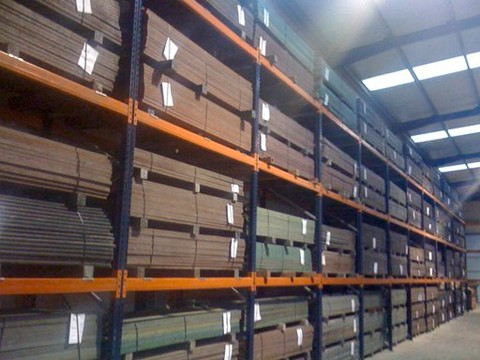
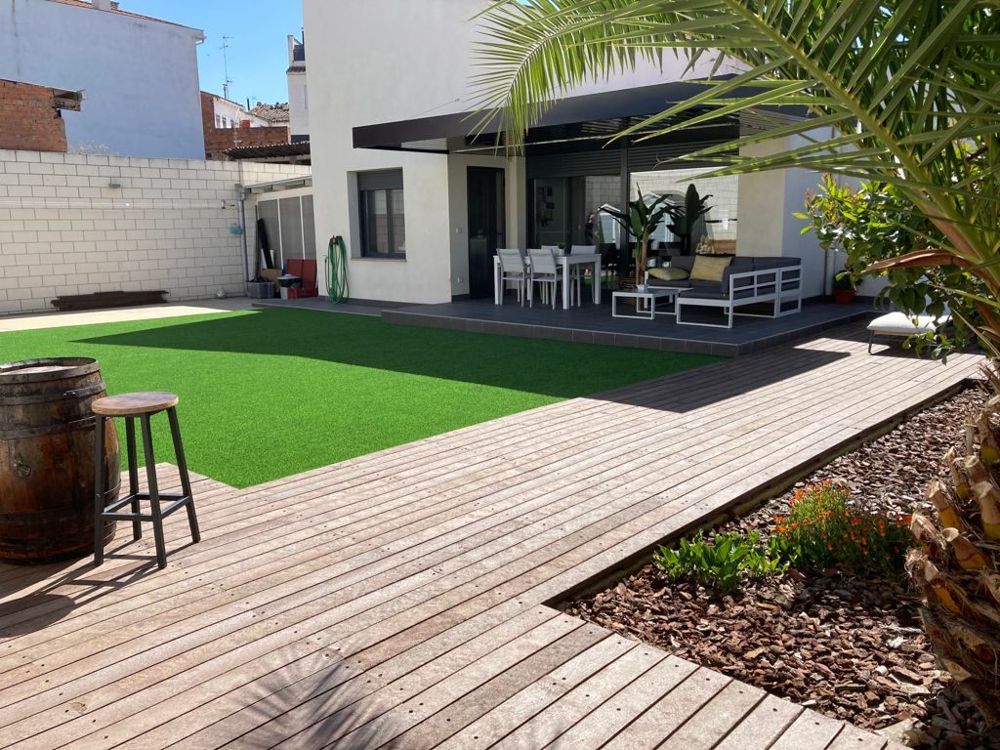
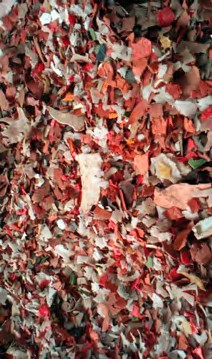
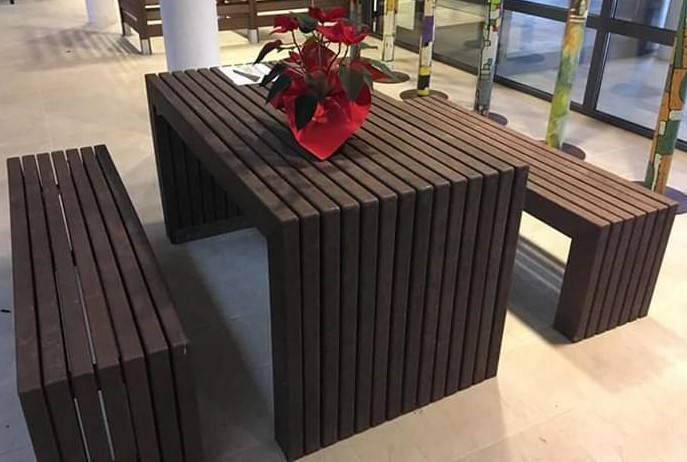
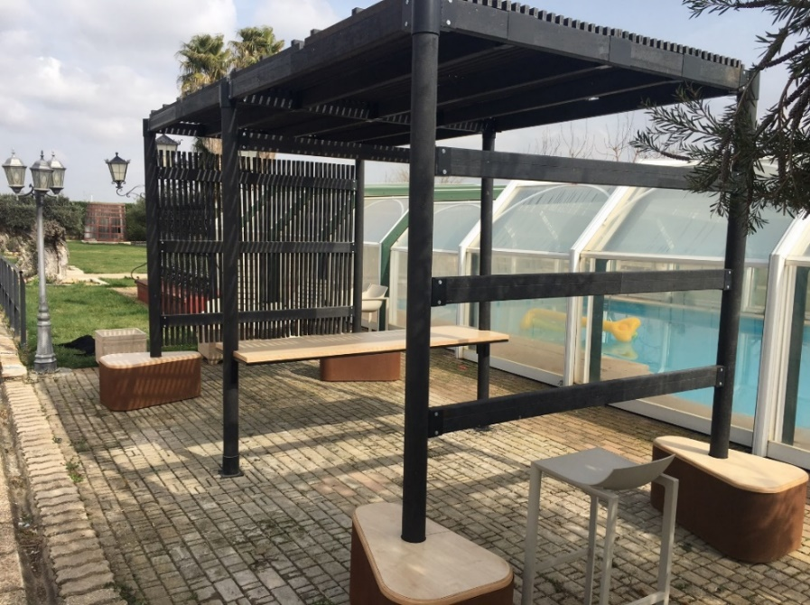

Descubre las soluciones de SOLTECO para valorizar plásticos difíciles y desarrollar aplicaciones sostenibles.
Sigue todo el recorrido de un residuo plástico: desde su llegada a SOLTECO hasta su transformación en un nuevo material y, posteriormente, en productos sostenibles y aplicaciones reales.



¿Tu empresa u organización genera plásticos difíciles de valorizar? Descubre nuevas vías de valorización e intercambia directamente con SOLTECO sobre tus propios flujos de residuos.
Descubre los productos y soluciones de plástico reciclado de SOLTECO para equipamiento, espacios públicos y naturales, construcción, paisajismo, agricultura y otras aplicaciones.

Descubre el proceso de valorización en funcionamiento: recepción, preparación, triturado, mezcla y transformación de plásticos difíciles de reciclar. Identifica los tipos de residuos que pueden encontrar una nueva vía de valorización.

Descubre la fabricación de perfiles y la gama de soluciones de plástico reciclado de SOLTECO. Explora sus propiedades, ventajas y posibilidades de utilización en equipamiento, construcción, paisajismo, agricultura y otros sectores.

Descubre realizaciones de SOLTECO en condiciones reales: pasarelas, vallados, bancos, mesas, señalización y otros equipamientos. Evalúa directamente las posibilidades de integrar estas soluciones en tus proyectos y en tu territorio.
Da un nuevo valor a tus plásticos difíciles de reciclar e intercambia directamente con SOLTECO sobre tus propios flujos de residuos.
Descubre soluciones circulares para el acondicionamiento de espacios públicos y naturales, mobiliario, señalización, pasarelas o vallados.
Explora nuevos materiales y productos reciclados que pueden integrarse en proyectos de acondicionamiento, infraestructuras o construcción.
Descubre en condiciones reales soluciones sostenibles para pasarelas, vallados, mobiliario, señalización y otros equipamientos exteriores.
Explora tanto nuevas vías de valorización para determinados residuos plásticos agrícolas como aplicaciones de productos reciclados en las explotaciones.
Identifica nuevas cadenas de valor, soluciones transferibles y posibilidades de cooperación transfronteriza.
En el marco del proyecto ORHI+, ya está en marcha una experiencia de cooperación transfronteriza en torno a la valorización de residuos plásticos agrícolas procedentes de Pirineos Atlánticos.
Estos residuos son recogidos y transformados por SOLTECO para producir nuevos materiales y productos. Este demostrador constituye un ejemplo concreto de las posibilidades de cooperación. La misión permitirá ir más allá: explorar nuevos flujos de residuos, nuevas aplicaciones y nuevas oportunidades de colaboración transfronteriza.
La jornada finalizará con un intercambio abierto entre los participantes y SOLTECO en torno a tres preguntas:
Programa y horarios provisionales, sujetos a posibles ajustes.
DESTINATARIOS — Empresas, entidades locales, organismos públicos, clústeres, asociaciones, centros tecnológicos y otros agentes interesados en la valorización de residuos plásticos y las soluciones de economía circular.
¿Quieres participar en la misión? La inscripción es gratuita y el número de plazas es limitado. Al inscribirte también podrás indicarnos si generas algún residuo plástico difícil de valorizar, si buscas productos o soluciones circulares o si quieres explorar una oportunidad de colaboración con SOLTECO.
INSCRÍBETE EN LA MISIÓN ↗